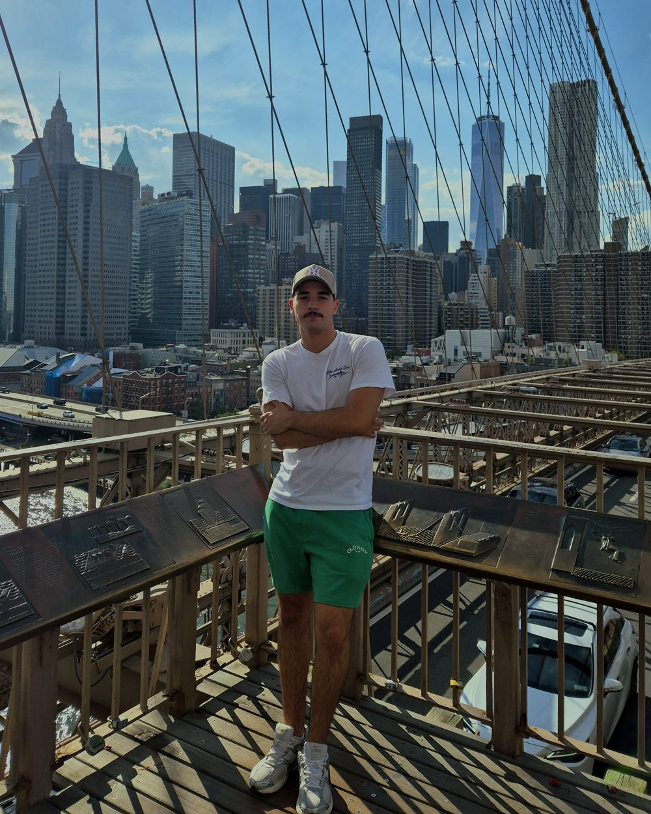

M.Sc. Statistics & Data Science · LMU Munich
Nikola Popadić
Statistician with a machine learning focus. I gather and prepare data, build models, integrate them into pipelines and measure how far to trust them.

Projects
Research & statistics
Agentic RAG, cross-lingual text alignment, and the swimming thesis.
See projectsExperience
Computer vision & NLP
DunavNET ML internships and research with the Bavarian Academy of Sciences.
See experienceAbout
Novi Sad → Maryland → Munich
Pool, coaching, a summer in the US and a master's at LMU.
Read the story1.3 9.61 / 10bachelor GPA, 2nd in class
2ML internship summers
2research projects in Munich
18 yrscompetitive swimming
Can you beat my 24.59?
50 m freestyleMy ghost dives with one of my 86 recorded reaction times. Can you beat them?
Your races 0 · wins 0
Put your name on the board
Latest
- Renewed the Serbian Scholarship for Master's Studies at Leading World Universities for 2026/27.
- Accepted to hackaTUM, Munich.
- Started an LMU consulting project on agentic RAG with the Center for Crisis Early Warning.
- Joined ALMA, cross-lingual alignment of medieval texts for the Bavarian Academy of Sciences and Humanities.